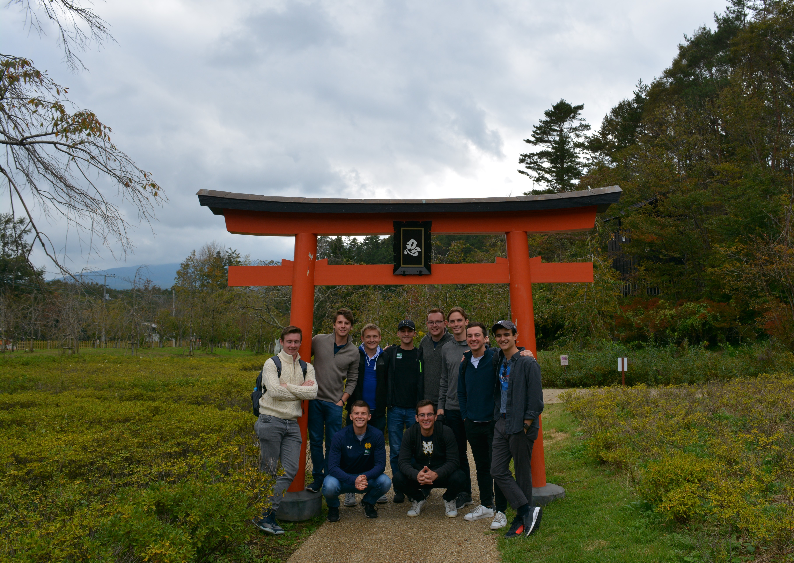
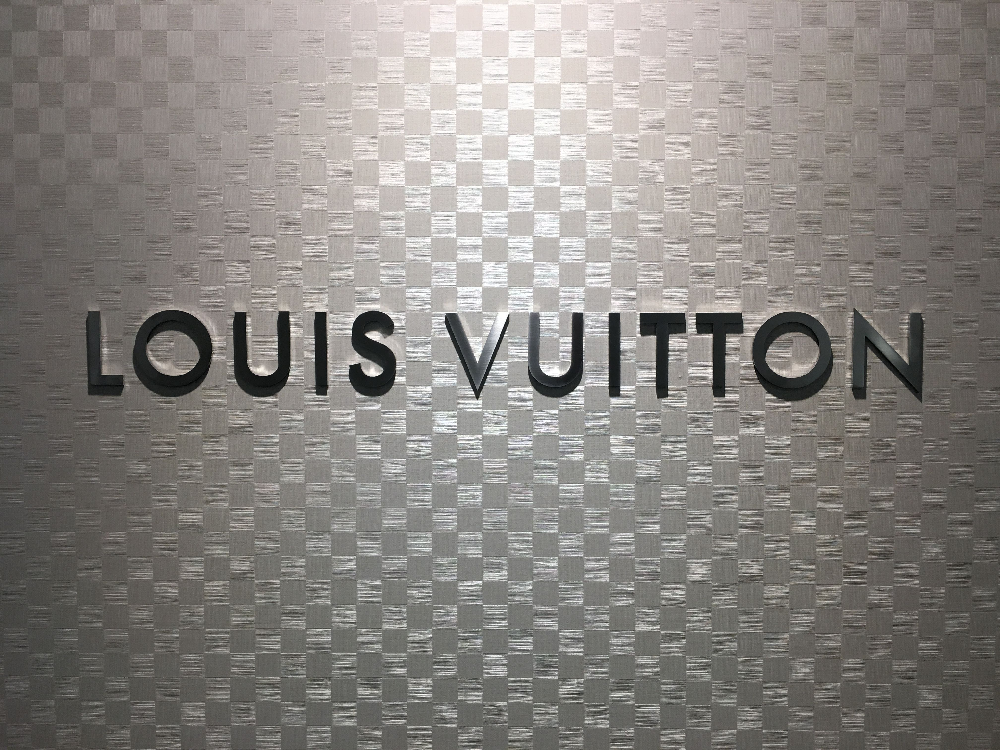

Planning the trip
As part of my responsibilites for co-director of the internaional division, my co-director and I were tasked with planning the Board trip. After a voting process in the Spring of 2018, we decided to go to Japan. This provided some logistical difficulties becuase
We had no contacts that we could reach out to in Japan. To begin we looked up the University of Notre Dame's alumni club in Tokyo. This provided us with a couple of names we could reach out to. From this group, we were able to schedule several company visits with companies such as Louis Vuitton, Abbot, and Kobelco. On the cultural side, we began looking up popular tourist attractions in Tokyo. We were able to develop a rough schedule and honed it in from there.
Domestically, we also had to get through the process of collecting the student contribution, setting up the safty meeting and making sure that the travel was approved by Notre Dame's International department and the Student Activities Office. Once we got through the all of that logistic planning we got waited for the travel date to arrive.
The trip
We flew out on Sunday the 14th of October and arrived on Monday the 15th due to the date change. We then checked into the hotel and spent that evening unpacking and decompressing after the flight. Tuesday morning we met with a Notre Dame Alumnus who worked at Kobelco, a construction equipment company. They have a very distinctive color scheme of royal blue and are very prevelant in Japan. We learned about Kobelco's business in Japan and that the equipment being used to build the 2020 Olympic games was made by them. Later that day, we visited the Edo Tokyo Museum and learnt the history of the Tokyo regions history predating the city we know today. On Wednesday, we went on a day trip to see Mount. Fuji and some of the cultural sites surronding it. Unfortunately though, the weather was not cooperative and we were unalbe to get any views of the mountain. The cultural sites were extremely interesting including a ninja village and a rural Japanese town.
 A group picture in the rural villageThursday, we had two visits, both with Notre Dame Alumni. In the morning, we visited a professor and discussed Federal Service Officers and their career paths. That afternoon, we visited Louis Vuitton's headquarters in Japan. At Louis Vuitton, we learned about building a brand and how LV maintains its supply chains while cartering to different cultures and demographics. In addition to this, we also learned about LV's intellectual property division and how it combats the counterfeit market present in Asia especially. The group found this visit especially interesting, as we learned about the common signs of a counterfeit as well as some of Louis Vuittons. For example, Louis Vuitton belts and sunglasses only use flathead screws. Any other type of screw is a sign of a counterfeit.
 Louis Vuitton logoOur last company visit took place on Friday, when we visited Abbott. At Abbott we learned about differences between health care from Japan to the United States. One of the major differences being that Japan has a public health care system as opposed to the semi-private health care system present in the United States. Because of this, Japanese people on average make over double the number of visits to the doctor that Americans. We also learned about the process of working with the government through approving new products for the public.